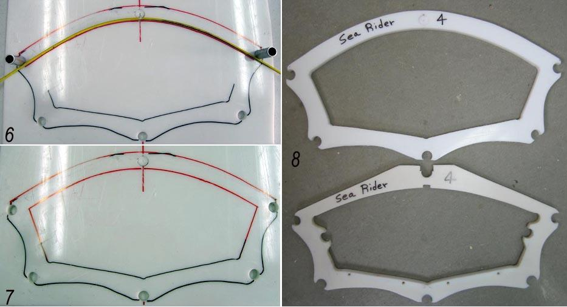

| Sea Rider Frame Changes - ( Masik 2 of 2) | Menu Previous Page Next Page |
|

6. Mark out bottom of upper Masik. Note: The deckridge tube has not been drilled on the new Masik . In it's place, a snap on connector will be used, but has not yet been added. |
|